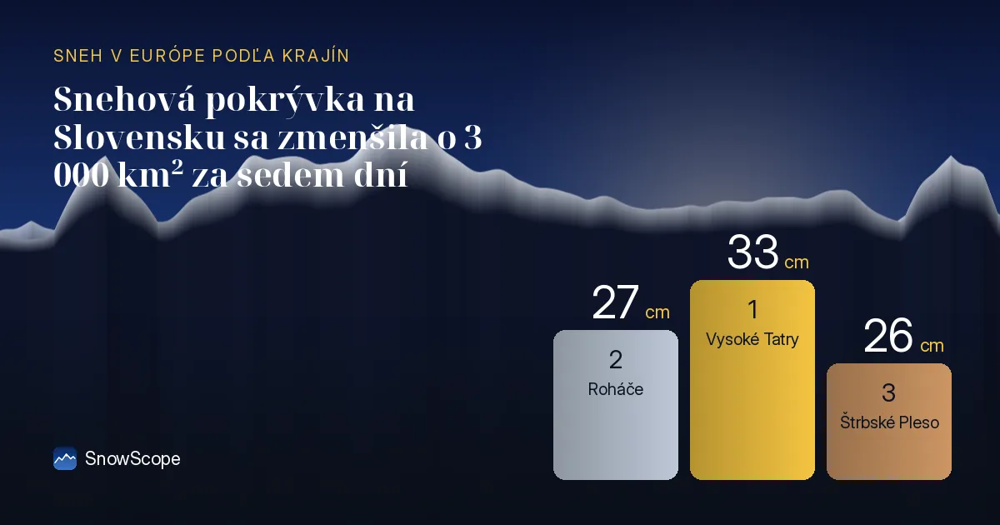
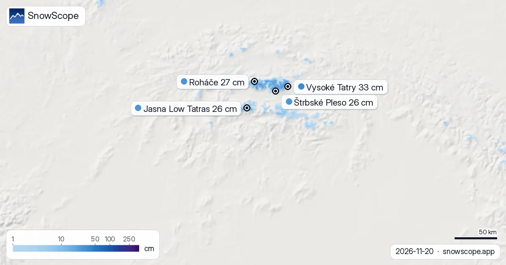
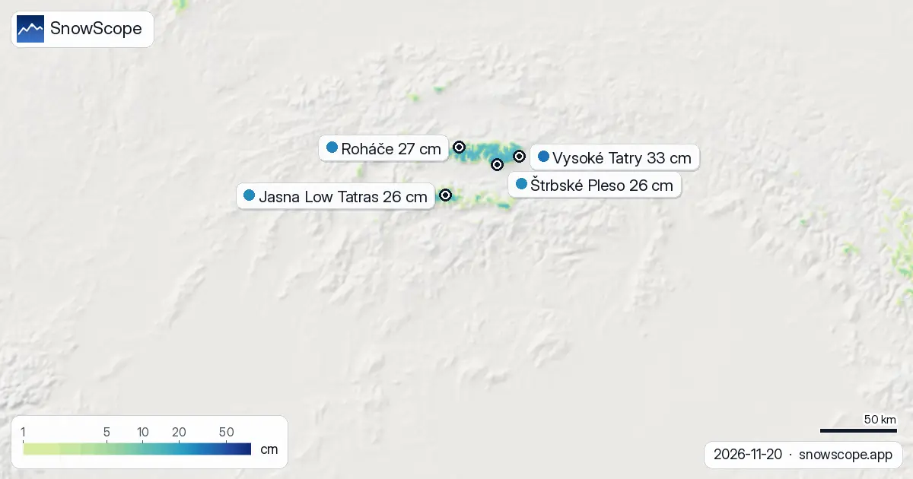

Snehová pokrývka na Slovensku sa zmenšila o 3 000 km² za sedem dní
Snehová pokrývka na Slovensku klesla z 4 640 km² pred siedmimi dňami na len 1 660 km² dnes—strata 2 980 km². Topenie sa uskutočnilo na celom území, ale vysoké hory nad 1 500 m majú stále dobrú pokrývku a nový sneh na Vysokých Tatrách počas posledných troch dní pomohol vedúcim strediskám.
Pozrite si predpoveď snehu pre Vysoké Tatry v aplikácii SnowScopeVýška snehu, upozornenia a 3D mapa, zadarmo.
Týždeň rýchleho zmrašťovania
Posledných sedem dní bolo ťažké pre sneh na Slovensku. 14. novembra sme mapovali 4 640 km² pokrývky; dnes je to číslo 1 660 km², čo je ustúpenie takmer o dve tretiny. Iba včera sa pokrytá plocha zmenšila o 350 km².
Strata nebola rovnomerná. Videli sme, ako sa snehová pokrývka dosiahla maximum 2 340 km² 17. novembra, potom prudko klesla. Tento typ výkyvov je normálny na začiatku sezóny: teplá doba, nasledovaná roztrúseným novým snehom, môže rýchlo vymazať zisky.
| Day | White area | Most new snow in 3 days | Deepest resort |
|---|---|---|---|
| pondelok, 16. novembra | 2 020 km² | 1 cm | Ski centrum Dedinky |
| utorok, 17. novembra | 2 340 km² | 7 cm | Ski centrum Dedinky |
| streda, 18. novembra | 1 840 km² | 9 cm | Ski centrum Dedinky |
| štvrtok, 19. novembra | 2 010 km² | 16 cm | Vysoké Tatry |
| piatok, 20. novembra | 1 660 km² | 13 cm | Vysoké Tatry |

Kde sneh ešte zostáva
Príbeh prežitia je v nadmorskej výške. Pod 1 000 m je sneh takmer neprítomný—3 percent pokrývky, 0 cm priemernej hĺbky. Medzi 1 000 a 1 500 m je len 37 percent terénu biele, s priemerom len 1 cm. Nad 1 500 m sa obrázok mení: 100 percent pokrývka pri 1 500–2 000 m (priemer 17 cm) a pri 2 000–2 500 m (priemer 28 cm). Snehová čiara sa nachádza pri 1 300 m.
Vysokohorské strediská sa najlepšie udržali. Vysoké Tatry vedú Slovensko s 33 cm, nasledované Štrbským Plesom a Jasnou na Nízkych Tatrách s po 26 cm. Všetky tri najlepšie hodnotené oblasti dostali 18–20 cm nového snihu v posledných 72 hodinách. Roháče majú 27 cm a Vrátna 18 cm.

Vysoké Tatry prekonali očakávania
Vysoké Tatry stoja mimo radu. Tento horský masív dostal 20 cm nového snihu počas troch dní—dvojnásobne viac ako padlo v niektorých ďalších zónach. Malá Fatra a Nízke Tatry dostali po 13 cm v rovnakom období. Zústredený snežný úhrn vysvetľuje, prečo Vysoké Tatry (na 2 182 m) majú teraz 33 cm a prečo všetky vedúce strediská sú nad 1 500 m.
Stabilita vo vysokej nadmorskej výške pochádza z čerstvého snihu aj z chladu. V nadmorských výškach nad 2 000 m sa priemerná hĺbka udržala alebo zlepšila. Nižšie strediská mali väčšiu nestabilitu, pretože teplejší vzduch a slnečné žiarenie rýchlejšie topili podkladovú vrstvu.
Čo prinesie ďalší týždeň
Prichádza viac sniegu. Prognózujeme až 6 cm v nasledujúcich troch dňoch a až 16 cm v nasledujúcich siedmich dňoch. Toto by malo pomôcť obnoviť nižšie svahy a upevniť vysokohorskú pokrývku.
Aj napriek tomu je jesenný sneh krehký. Skaly a tráva môžu presvitať cez 10–15 cm a teplá vlna môže zmeniť zisky v priebehu dní. Prognóza znamená, že sa podmienky zlepšia, ale lyžiari by mali byť ostražití na tenké pokrývky a premenlivý terén.
Regionálni lídri a susedia
Vysoké Tatry sú teraz líder krajiny s 33 cm a 18 cm nového snihu za tri dni. Ski centrum Dedinky viedlo krajinu 16. a 18. novembra, ale od tej doby spadlo späť, keď strediská na Vysokých Tatrách nahromadili viac čerstvého snihu.
Za hranicami Poľsko najlepšie mestosť (Kasprowy Wierch) drží 40 cm, zatiaľ čo Česko vedúce stredisko (Skiareál Horní Domky) má len 12 cm. Poľské vyššie hrebene a severozápadne orientované svahy sa v tomto skorosezónnom cykle viedli lepšie.
Čo sledovať
Len 35 zo 107 slovenských stredísk má merateľný sneh dnes. Biela pokrývka tvorí 9 percent mapovanej plochy. Odpočítavanie na trvaloučší sneh sa teraz začína: ak sa prognóza splní a nový sneh príde podľa plánu, najmä okolo 26., bude novembrové minimum dočasné. Ak sa nepodarí, skiers na začiatku sezóny budú čeliť roztrúseným a tenkým podmienkam ešte dlho.
Tipy pre lyžiarov
- Choďte na vysoké hory nad 1 500 m—Vysoké Tatry, Štrbské Pleso a Jasna na Nízkych Tatrách majú najkonzistentnejšiu pokrývku. Nižšie strediská ako Vrátna (18 cm) sú tenšie a viac vystavené.
- Pozor na skaly a riedku trávu na svahoch pod 1 500 m. Hĺbka snihu je tam v mnohých oblastiach pod 1 cm. Skorosezónna pokrývka je krehká; držte sa upravených zjazdov, kde je hĺbka snihu najmenšia.
- Očakávajte, že sa podmienky budú počas nasledujúceho týždňa meniť deň za dňom, keď nový sneh príde nerovnomerne. 26. november je prognózovaný ako najsnežnejší deň—môže byť stojí za to načasovať si na neho vašu návštevu.
- Pred odchodom mimo zjazdov skontrolujte oficiálnu lavínovú výstrahu pre Slovensko. Skorosezónna snehová väzba je neistá; konzultujte miestne prognozy a sprievodcov.
- Použite mapu SnowScope na zväčšenie vášho vybraného strediska a skontrolujte hĺbku a pruhy nového sniegu.
About these numbers
Resort snow depths are the deepest snow on the resort's upper slopes on the date shown; they are estimates for an area, not a measurement at one point. Forecasts can change. Always read the official avalanche bulletin before going off-piste.
Cite this report
For research, teaching or the press: the numbers and charts are free to reuse under CC BY 4.0 with this citation.
SnowScope (2026), Snehová pokrývka na Slovensku sa zmenšila o 3 000 km² za sedem dní, https://snowscope.app/blog/sk/2026/11/slovakia-snow-cover-loss-this-week-20-november-2026.html, accessed 2026-11-20
SnowScope (Atlas Labs). (2026, November 20). Snehová pokrývka na Slovensku sa zmenšila o 3 000 km² za sedem dní. SnowScope snow reports. https://snowscope.app/blog/sk/2026/11/slovakia-snow-cover-loss-this-week-20-november-2026.html
BibTeX
@misc{snowscope2026slovakiasnowcoverlossthi,
author = {{SnowScope (Atlas Labs)}},
title = {Snehová pokrývka na Slovensku sa zmenšila o 3 000 km² za sedem dní},
year = {2026},
month = nov,
howpublished = {\url{https://snowscope.app/blog/sk/2026/11/slovakia-snow-cover-loss-this-week-20-november-2026.html}},
note = {Published 2026-11-21 13:12 UTC; accessed 2026-11-20}
}· CC BY 4.0 · Methods, data and tools →
Vysoké Tatry: snow and temperature by height, this winter vs last (tools) →
Follow Vysoké Tatry
Zadarmo: správa, keď prichádza nový sneh, a predpoveď každé ráno.